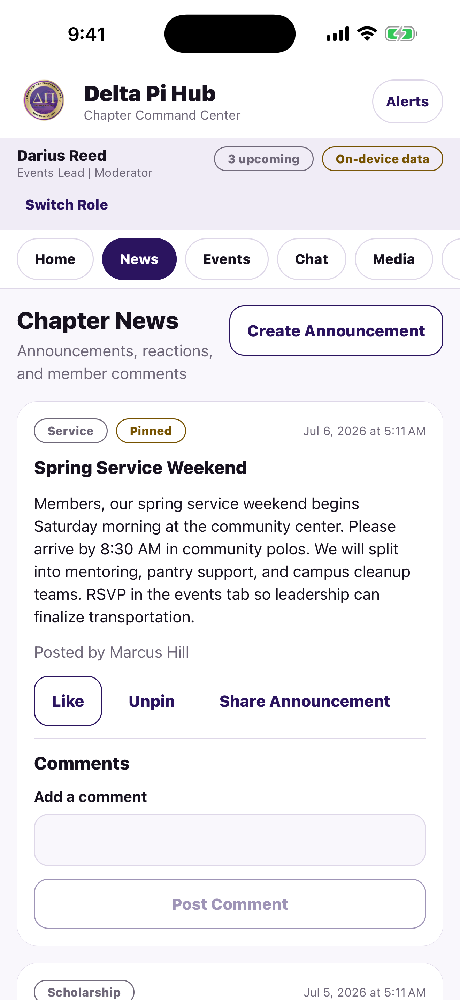
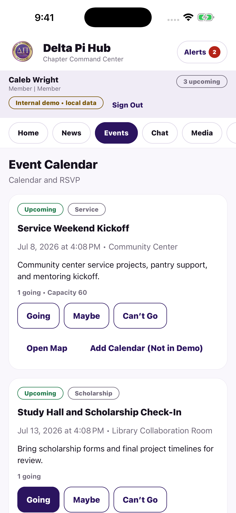
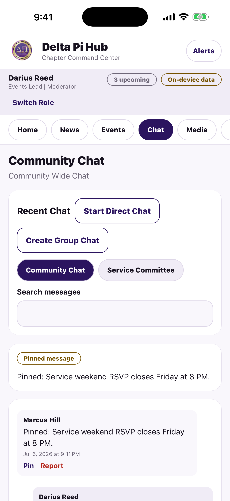
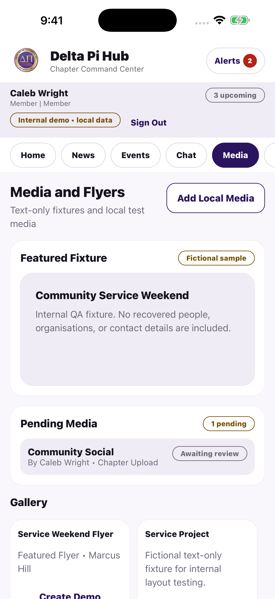
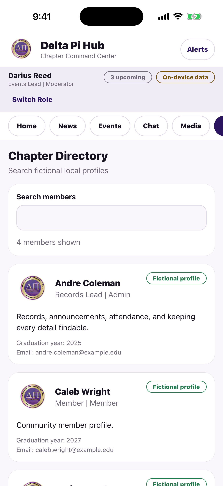

Approved AWS accounts
The production edition sends a username, user ID, verified email, full name, optional phone number, profile fields, and membership status to AWS so the Super Admin can approve access and operate the member directory.
Delta Pi Hub · Secure chapter workspace
A self-contained community hub for announcements, events and RSVPs, chapter conversations, media, member discovery, and role-based leadership tools. The production account edition uses approved member access and an encrypted AWS workspace. The older iOS 0.1.4 preview remains a fictional, on-device demonstration.

Inside the app
Review announcements, coordinate events and RSVPs, keep up with chapter conversation, share approved media, and find members. Leadership views remain role-gated inside the local workspace.





These images are genuine captures from the iOS 0.1.4 App Store submission build with fictional, on-device content. They do not depict a live member service.
Privacy policy
Effective 13 September 2026 · Developer: Javonn Liner · javonn19@gmail.com
The production edition sends a username, user ID, verified email, full name, optional phone number, profile fields, and membership status to AWS so the Super Admin can approve access and operate the member directory.
The app contains no advertising, cross-app tracking, analytics, crash-reporting SDK, or remote push-token registration. The assistant does not use a third-party model or Amazon Bedrock.
Announcements, comments, reactions, events, RSVPs, check-ins, chats, reports, profiles, and approved photos or videos are stored in encrypted AWS services and returned only to approved accounts. Event reminders remain on the device.
Information processed in AWS
We use this information only for app functionality: authentication, account approval, the member directory, chapter collaboration, moderation, media delivery, and member-requested assistant answers. We do not sell this information or use it for advertising or tracking.
Information not retained by the app
Retention and deletion
Use Profile → Delete Account to remove the Cognito login, approval record, profile, member activity authored by that account, and uploaded media. A minimal pseudonymous security audit record may be retained to protect the service. Device backups may separately retain local app settings under Apple or Google policies.
Device and external services
iOS or Android handles notification permission and local reminders. Maps, Zoom, GroupMe, Cash App, Venmo, public chapter links, and the system share sheet open only when you choose them. Those third-party services process the interaction under their own privacy terms; Delta Pi Hub does not receive your payment credentials or transaction result.
Audience and children
Delta Pi Hub is intended for adult chapter members and authorized testers. It is not directed to children and does not knowingly collect children's personal information.
Security and policy changes
Sessions are stored with platform secure storage. AWS encrypts the DynamoDB workspace and private S3 media bucket at rest. Cognito access tokens, approval checks, server authorization, and required Super Admin authenticator protection restrict access. AWS acts as the cloud service provider for authentication, application processing, database storage, private media storage, and short-lived service logs.
Account deletion
In the production account edition on iOS or Android, sign in, open Profile or Account Status, choose Delete Account, and confirm.
This option is available to approved, pending, and rejected accounts. It removes the Cognito login and membership request. For an approved account, it also removes the AWS directory profile, member activity authored by the account, and uploaded media. A minimal pseudonymous security audit event may be retained under the chapter's approved retention policy. The older on-device demo uses Reset Workspace Data instead.
If you cannot access the app, request deletion from the email address on the account: javonn19@gmail.com. Include only your username and account email—never send your password or an authenticator code.
Support
Contact the Delta Pi Chapter through its official support page. Include your device model, operating-system version, and the screen where the issue occurred.
App review contact: javonn19@gmail.com
More from Javonn Liner
An unofficial PFRA preparation aid with offline scoring, exercise guidance, HAMR practice, and official-source links.
Privacy & support
A party-building garden RPG about restoring ten magical terraces through tactical battles, puzzles, and Seedkin bonds.
No public release date announcedA compact RPG Maker garden prototype exploring a cozy, one-map care and discovery loop.
Development archive